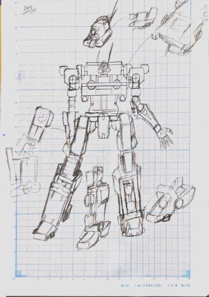

ロボデザのススメ！
～基本編・序章～
はじめに みなさんこんにちは！今年からお世話になります 2 回生の地雷軍曹というものです。 気づけばもう 12 月、月日の入れ替わりは早いものです。それにしても寒いんだかなんなんだかわからない陽気ですが笑。ところで今季のアニメみなさんチェックしてますでしょうか? ロボ・特撮系アニメやキャラアニメと属性てんこ盛りの素晴らしいラインナップですよね!! （SSSS.GRIDM○N とかゴブリンスレ ○ ヤーとか...）そんなアニメから導入してくる形で今回の Advent Clender 企画６日目を担当させていただきますよ! 今回書く内容は、ズバリ『かっこいいものを描く・作る時の心得』です! その中で僕自身が得意とするロボデザインを主に取り上げつつ以下の３本仕立てで書いていきたいと思います!
- ロボデザのススメ其の一 ～アイデア・設定の出し方～
- ロボデザのススメ其の二 ～ロボもの描き方・作り方講座基礎編 ① ～
- ロボデザのススメ其の三 ～ちょっと脱線休憩、参考資料のお話～
1. ロボデザのススメ其の一 ～アイデア・設定の出し方～
早速ですがみなさん、絵を描いたり何かオリジナルで作る時に、決まったテーマ以外に設定やコアな部分のアイデアを出して作品を作ったことがありますか? おそらくだいたいの人が「うるせ－－! 知らね――!!」状態だと思います。まぁ実際面倒なんですよね。。面白いことってだいたい面倒くさくて、それをうまく表現できなくて中途半端になって...という人が多いと思います。かくいう僕も苦い思い出があります。（ちょっとストーリーを書いてみようかなと思っていた時期があったのです。が、それはまた別のお話） どうしても言葉とかで出しにくいことも多いと思います。ですがみなさん、僕らには（画力はともかく）なにがしかのアプローチでその瞬間思いついたこと・閃いたことを表現することってできますよね？実はそういうものを細かくストックしておくことがアイデア出しや設定云々につながってくるんです。特にロボものは設定がしっかりしてないと「一体こいつは何をするロボで、どんなことができるの??」というところで詰まり、色々破綻してしまうものが出てしまいます。これはゴブリンスレ ○ ヤーのようなファンタジーものも例外ではなく、武器や衣装にはそう言った設定などが欠かせません。多少面倒ではありますが、仮想世界のものを描く・作るとはそういうところを大事にしないと後で困ってしまうものなのです。 とにかくここで言っておきたいのは、どんな方法であれ自分で「あ、こんなのあったらいいな」と思うものをなんらかの形で残すクセをつけてみましょうということです。荒削りでいい、稚拙でもいいなんでもいい。完成度はいいからとにかく形に残しそれを使いたくなった時の自分に記憶のバトンとして繋げられることが重要なのです。

2. ロボデザのススメ其の二 ～ロボもの描き方・作り方講座基礎編 ① ～
ではここからは実践編ということで描き方・作り方に入ります! ここでいうポイントは無機質を扱うような背景（都市、部屋の中など）幾何学を基調としたデザインをしたい人もこころがけるといいことを書いていきます。 ではまずポイント其の一『幾何学を意識する』 僕は今でこそ３ DCG でロボを作っていますが（といってもそちら方面の知識がまだまだ不足してます）絵で描くときや今回の津田沼祭のように 3D プリンターで出力する作品を作るときにも考えなくてはならないこと、注意すべきことは変わりません。逆にそれがうまくいっている人はどっちで表現してもうまくいくし、ちょっと心がけるだけでだいぶ物の見方とかも変わってくると思います。 とくにこの『幾何学を意識すること』については基本中の基本で、特に対称的なデザインのロボや鎧甲冑などではかなり重宝します。この手の線画や３ D モデルは「情報量＝線の数＝価値＝かっこよさ」といった具合に絵として描いたり作ったりする時その作品の完成度に直結していきます。（ただし、３ D モデルは若干例外的なところがあります）線の数や描き込み具体はやりながら適宜調整することも頭に入れつつ作業をしないといいけないので、ある意味頭がいたくなりますがここで頑張ればいいものが出来上がると思ってください。 ポイント其の二『立体視に注意!』 「立体を意識することは３ D ではそこまで...」と思うかもしれません。でも重要ですよ？これ考えないとバランスの悪い、ダサいデザインのロボットができてしまいます。絵で描くときももちろん立体として破綻する箇所がないかなどを確認しながら描くことはとても重要です。 そこでまず提案したいのが『描くとき、作るときは中からではなく外から』を意識してもらうことです。簡単な話アタリをつける段階でまずシルエットを捉えてから中身を作っていく、ディテールを凝るときも同様に外側から内側へ作り込むことを意識する。これだけでかなりいい感じに整ったものが出来上がるはずです。細かいところに凝りすぎると、その外の大きなパーツとの親和性とかバランスとかでなかなか苦労させられることになりますのでこるときはほどほどに、時には外の空気でも吸ってリフレッシュする要領で視点を変えてみることも重要です。 今回はここまで、続きは後ほどあとがきの方で告知させていただこうと思います。 （唐突に始まる宣伝）

3. ロボデザのススメ其の三 ～ちょっと脱線休憩、参考資料のお話～
ここまで長々とお付き合いいただきありがとうございました。いやぁこう言ったものを書くのはなかなかどうしてなれないものですね。ところでみなさんは『プラモデル』というものをご存知でしょうか?
もちろんご存知ですね!
ガンプラしかり、軍艦のプラモしかり昔からあるタイプのものも魅力的ですよね。
しかしながら、おそらく今のソフメだけでいうならガチガチのロボや軍艦のような昔からあるジャンルを勧めてもあまり反応はないと思うので、ここではサンプルという意味もかねたプラモデル紹介をしていきます。僕はプラモ自体結構色々作っているのですが、最近は女の子
×
ロボのプラモもかなり増えてきました（アニメも出ましたね！）その中でお勧めするのが、コトブキヤというブランドのプラモデルです。プラモとは思えないほどの可動域の広さ、表情豊かで個性的な女の子そして忘れてはいけない洗練されたメカデザイン!
どれを取ってもなかなか見ごたえがあります。ソフメ内で女の子
×
ロボのキャラデザは出会ったことがありませんがもしチャレンジしてみたい人がいたらぜひ参考にしてほしいものです。バンダイのものからすると若干お値段と販売場所に限りかあるのとで手が出しづらい印象がありますが、オンラインショップでも取り扱っているのでこれを機に初めてみるのはいかがでしょう?（意外とオンラインの方が安かったりします）
また武器パーツも豊富に揃えている同社の製品は武器だけでも参考になるものばかりなので、そちらも是非!
（ここで言っておきますが、ベツニ沼ニヒキズリコムツモリハナイヨーダイジョウブダヨー）
参考
URL：https://www.kotobukiya.co.jp/store/direct/
最後に
長々と書き尽くしましたが、いかがだったでしょうか? 僕は正直一番最後のところをもっと語って見たいと思ってはいます笑。しかしあまり長すぎるのもいけないので今回はここまで。また別の機会があればそこでお話ししたいですね。なお２番目描き方作り方についてですが、これを機にもっと詳しく知りたい方向けにプチ講座を春休み中にできないか企画してみようかと考えています。つきましてはこの記事が掲載された後その日のうちから 2 ～ 3 日間ほど Twitter にてアンケートを取ってみようかなと思います。そちらの方も是非よろしくお願いします! 最後になりますが、私は今年から入ったばかりの 2 回生ではありましたが個性豊かな先輩や同期の方々に恵まれて幸せをいっぱいに感じられた１年を過ごせました。企画に参加させていただいた方もそうでない方もありがとうございました。そしてこれからもまたどうぞよろしくお願いします！
来年もここに集いし同志にとって、そして私自身にとって実りある年にならんことを! -そして世に平穏のあらんことを-
一フロム脳患者兼ソフメの名もなき整備兵より
地雷軍曹 （A.H）著 2018 12/6